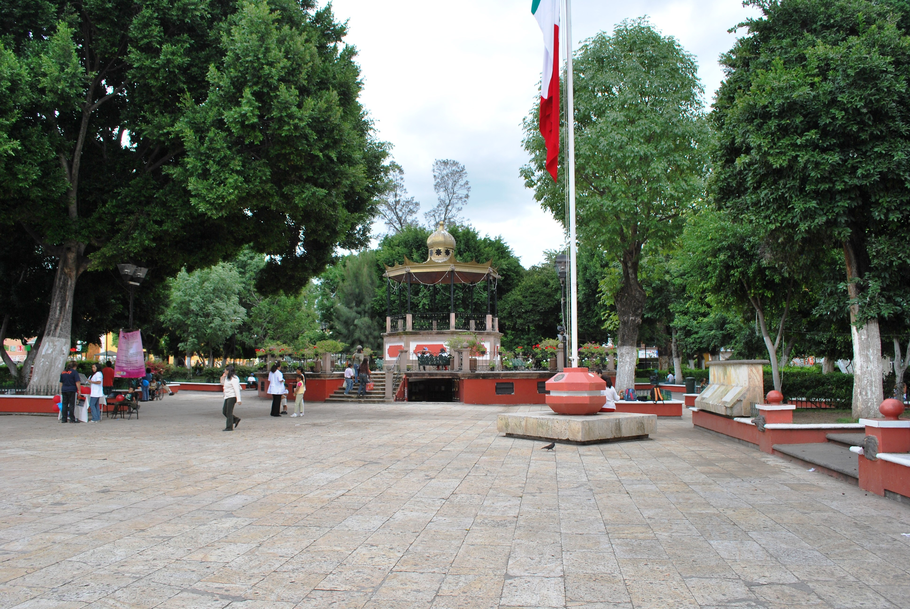
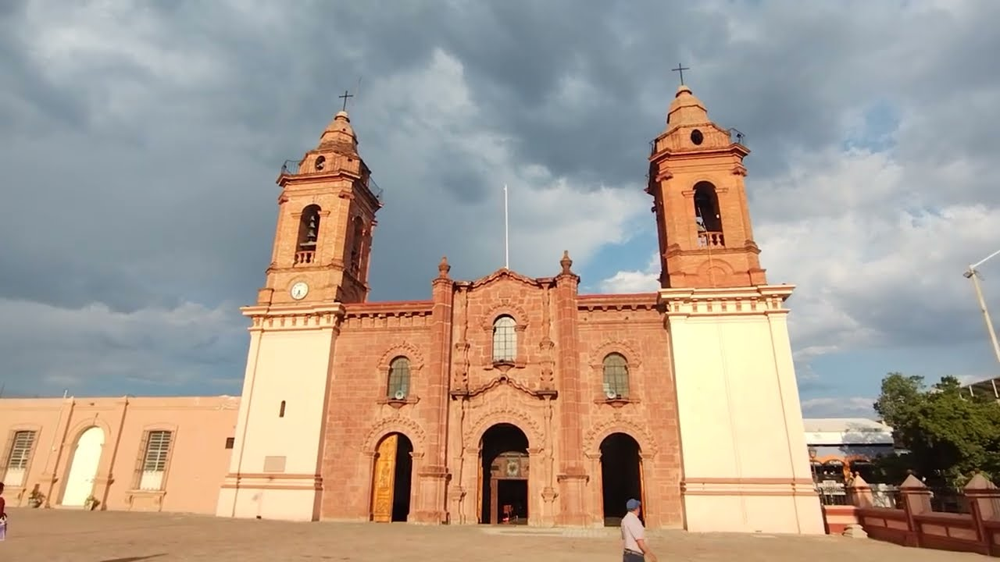
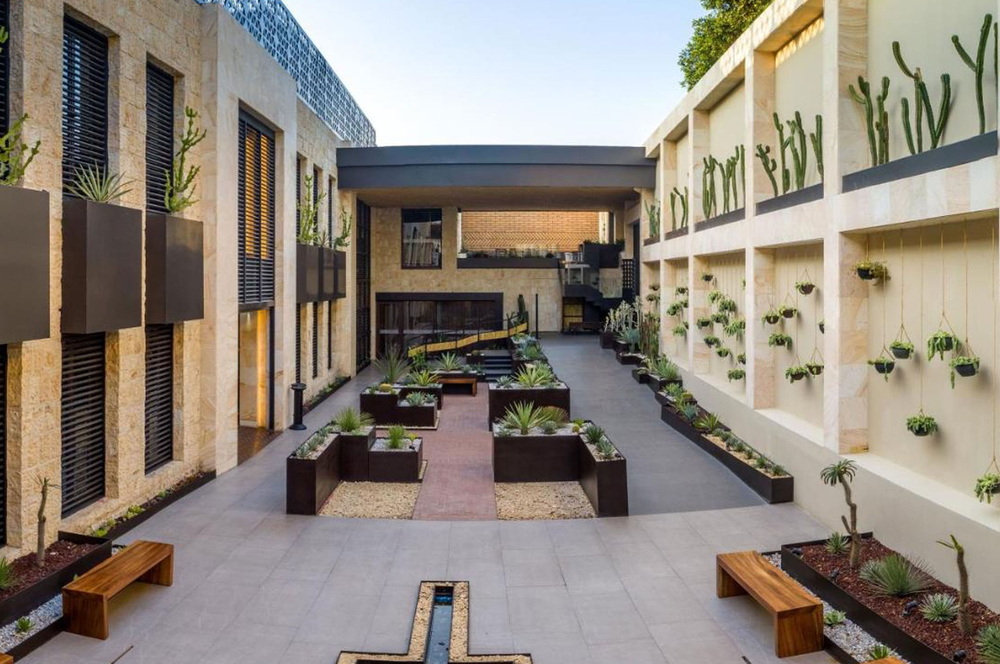
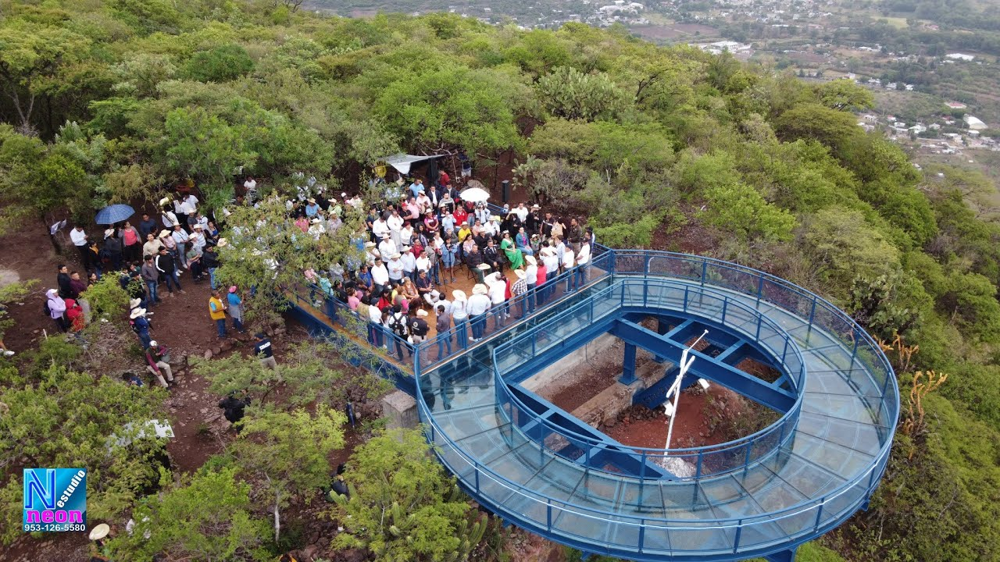
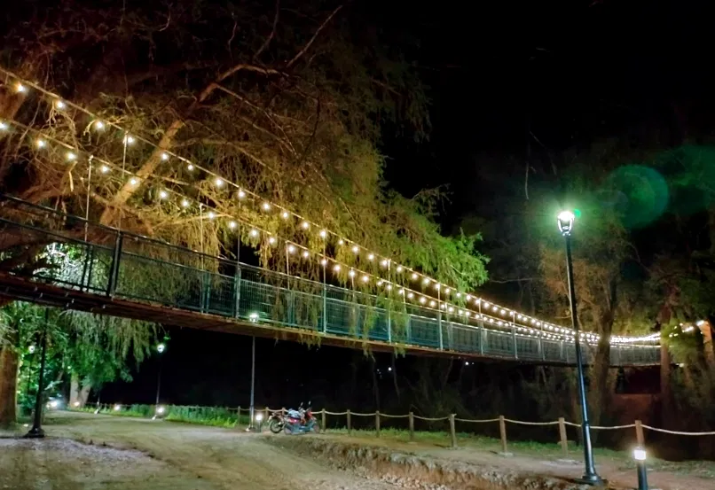
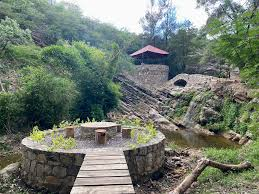
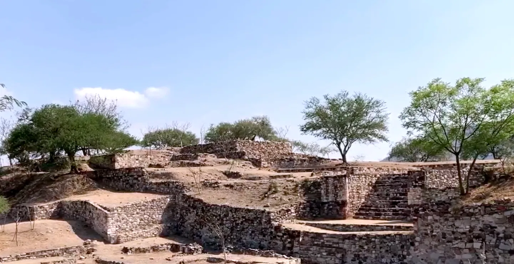

Lugar principal de convivencia en Huajuapan, rodeado de comercios y cultura.
Cómo llegar
Hermosa iglesia histórica representativa de la ciudad y sus tradiciones.
Cómo llegar
Espacio cultural donde se conserva la historia de la región Mixteca.
Cómo llegar
Disfruta de una vista panorámica impresionante de Huajuapan desde este mirador moderno y seguro.
Cómo llegar
Icono turístico de la ciudad, ideal para caminar y tomar fotos espectaculares del río Mixteco.
Cómo llegar
Paseo peatonal donde se realizan eventos culturales y recreativos, rodeado de arquitectura histórica.
Cómo llegar
Lugar ideal para el senderismo y disfrutar de la naturaleza y vistas panorámicas de la región Mixteca.
Cómo llegar